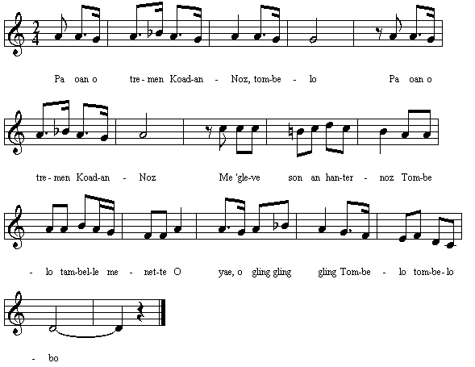

|
A propos de la mélodie: Inconnue. Remplacée ici par (source: le site de M. Pierre Quentel (voir "liens"). Bibliographie La Villemarqué est le seul à avoir collecté cette chanson. |
About the tunes Unknown. Replaced here by (source: the site of M. Pierre Quentel (see "links"). Bibliography La Villemarqué is the only collector of this song. |
|
BREZHONEK p. 14 1. |
TRADUCTION FRANCAISE p. 14 1. |
ENGLISH TRANSLATION p. 14 1. |